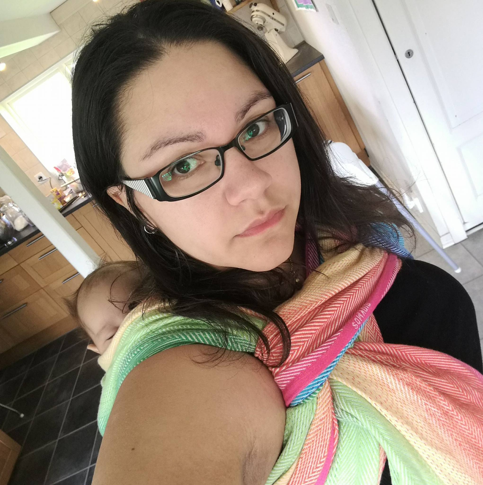

Jag heter Antonia, är född och uppvuxen i Lund, men bor nu i ett litet hus på landet utanför Eslöv. Där bor jag tillsammans med min man Tobias och våra barn Valdo 5 år och Otis 3 år. Jag gillar att hålla på med handarbete, som att sy och sticka, och älskar att bygga saker. I många år (20+) hade jag en eller flera Old English sheepdogs, världens bästa hundras. Tyvärr har jag inte tid att ha någon hund just nu, men drömmer om att snart kunna ha en Old English Sheepdog igen.
Här är ett citat om Old English sheepdog från Old English sheepdogsällskapets hemsida:
"En kraftfull men sunt byggd sällskapshund, älskvärt temperament, såväl mot människor som mot djur. Lättlärd, glad och vänlig men med en redig skvätt tjurskallighet, perfekt dolt bakom en stor, charmig personlighet!"